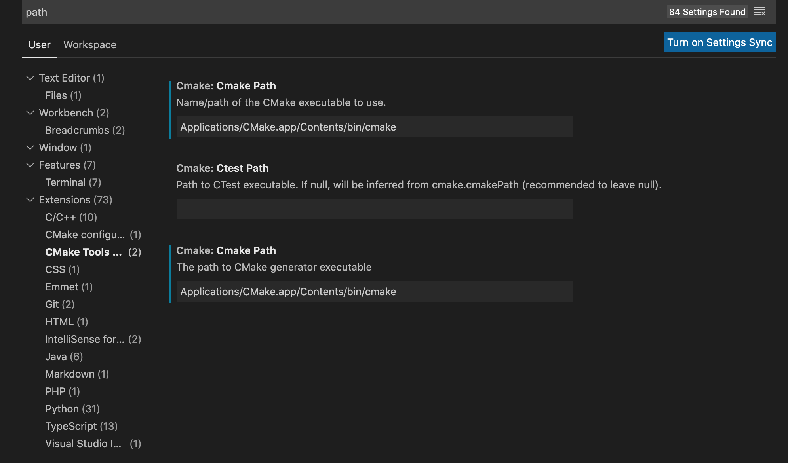
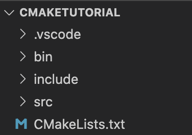

After installation, you can make sure CMake is installed by typing in this command into the terminal: cmake --version. You actually won't be using this application directly, it'll be used by the extensions we'll download for Visual Studio Code.
Links for the needed extensions are here and here . CMake allows language support for CMake in VSCode, while CMake tools allows for it to be used while in VSCode itself instead of using its more complicated UI.
With everything installed we can start to actually make a CMake file and have it compile a C++ program.If you get some error in VSCode talking about a path issue, you'll have to manually put in the path to your CMake in the extension. Mine was at Applications/CMake.app/Contents/bin/cmake (For MacOS). Click the gear icon in VSCode at the bottom left, and go to settings. From there type in path, and you should see CMake tools. Click on that and add in the path to your CMake application.

Before creating our CMakeLists.txt file, we'll have to structure our files properly. In this example there'll be four sub-directories: bin, include, src, and build.
Bin will hold our executable, include will have our header files, and src will hold the source files. We actually won't make the build folder ourselves; CMake will create it
as it builds our program.

After doing this create the CMakeLists.txt file in the working directory.
Theres a couple things to note as CMake initializes and configures your workspace.
With everything in place we can start to edit the CMakeLists.txt. Here's the code for a very basic CMakeLists.txt file that will compile our C++ files.
cmake_minimum_required(VERSION 3.8)
#REQUIRED, basically minumum version of CMake required for your own use
project(CMakeSingleFolder C CXX)
#REQUIRED, sets the project
name to first argument, and C & CXX specify what languages are #supported.
set(CMAKE_C_STANDARD 99)
set(CMAKE_CXX_STANDARD 11) #Makes sure the compiler
knows what to link and include when compiling based on a certain c++ standard
set(CMAKE_POSITION_INDEPENDENT_CODE ON)
#Makes sure the compiler doesn't fall back to an eariler version of c++ for linking #standards
set(EXECUTABLE_OUTPUT_PATH ${CMAKE_SOURCE_DIR}/bin)
#Specifies the path for the executable to be put.
#${CMAKE_SOURCE_DIR} is the directory where the CMakeLists.txt is being run.
include_directories(include)
#takes in a relative/absolute path to include files from.class
Here we take them from the #subdirectory "include".
file(GLOB Sources "src/*.cpp")
#Puts all cpp files from the "src" subdirectory into a subdirectory
called "Sources."
add_executable(main ${Sources})
#Makes the executable, which is called main. We also put in
our sources files from the variables #Sources.
In addition to this CMakeLists.txt file, I have created example header and source files in the appropriate folders, which when run will
print the first letters of whatever message you put into the console. To build it simply click the Build button at the bottom of VSCode.
You can then run it by pressing the play button. If you make edits to any of the files you can click the Build and Play buttons as you wish,
allowing for fast compilation of C++ files.
Download link for this example found here.
One thing to note about GLOB, it's not technically recommended by the CMake team because normally, CMake doesn't know to rebuild your libraries/projects if you don't modify the
CMakeLists.txt itself.
This can be problemental if one were to remove a source file from a library and CMake doesn't rebuild the library, as the program run with fatal errors.
However, since we're using an IDE that integrates CMake, it will automatically rebuild the necessary components when we modify code, even outside CMakeLists files.
Therefore GLOB is fine for our use, but for larger projects GLOB is not recommended, instead the laborous task of adding teach source file to the list is the safer practice.